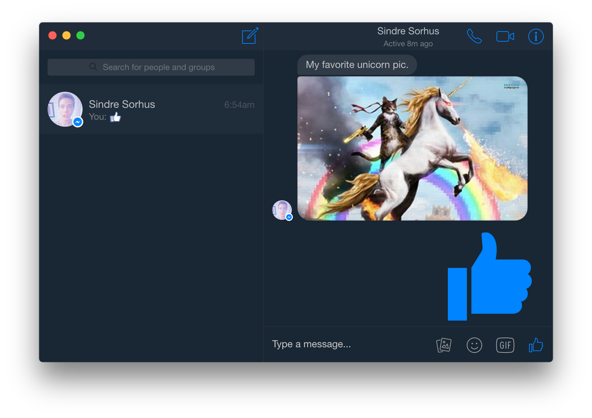
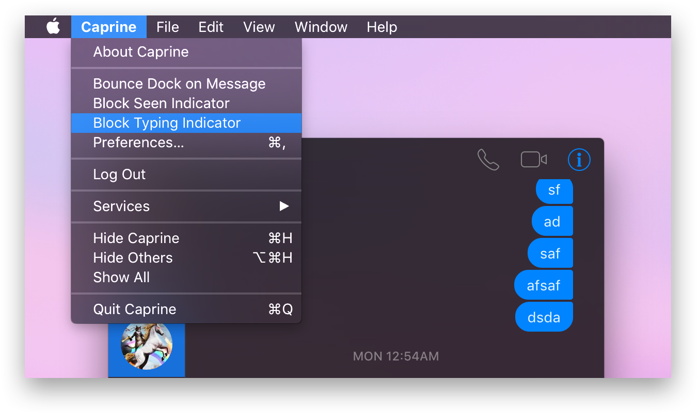
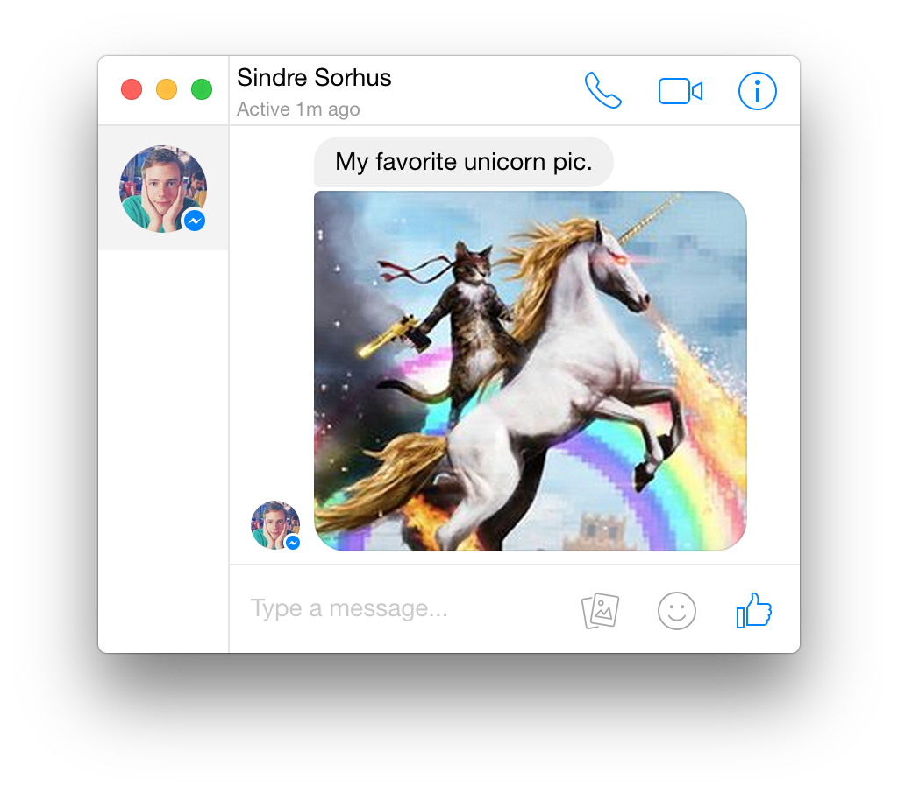
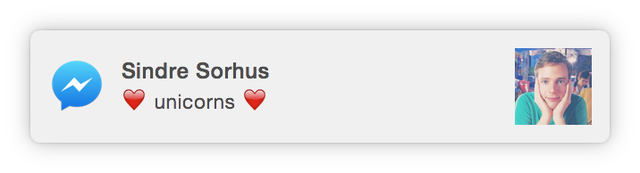

Caprine
An elegant Facebook Messenger desktop app
Download
Read more
Features

Dark mode
Convert your messenger to a dark theme

Privacy
Ability to toggle last seen/typing indicators

Responsive
Interface adapts to smaller sizes

Notifications
In-house notifications to keep you up to date